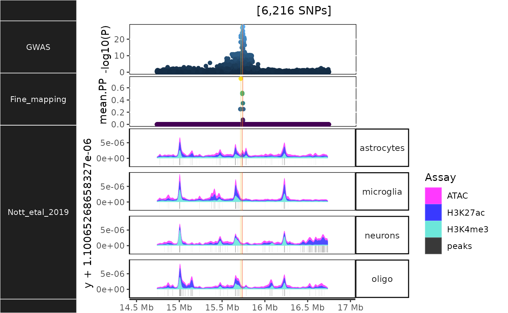

vignettes/cell_type_specific_epigenomics.Rmd
cell_type_specific_epigenomics.Rmdechoannot includes data generated by “Nott2019”:
Nott A, Holtman IR, Coufal NG, … Glass CK. Brain cell type-specific enhancer-promoter interactome maps and disease-risk association. Science. 2019 Nov 29;366(6469):1134-1139. doi: 10.1126/science.aay0793. Epub 2019 Nov 14. PMID: 31727856; PMCID: PMC7028213.
superenhancers <- echoannot::get_NOTT2019_superenhancer_interactome()
enhancers_promoters <- echoannot::NOTT2019_get_promoter_interactome_data()
peaks <- echoannot::NOTT2019_get_epigenomic_peaks()
dat <- echodata::BST1
histo_out <- echoannot::NOTT2019_epigenomic_histograms(dat = dat) ## NOTT2019:: Creating epigenomic histograms plot## + Inferring genomic limits for window: 1x## Constructing GRanges query using min/max ranges across one or more chromosomes.## Downloading data from UCSC.## Importing... [1] exvivo_H3K27ac_tbp## Importing... [2] microglia_H3K27ac## Importing... [3] neurons_H3K27ac## Importing... [4] oligodendrocytes_H3K27ac## Importing... [5] astrocytes_H3K27ac## Importing... [6] exvivo_atac_tbp## Importing... [7] microglia_atac## Importing... [8] neurons_atac## Importing... [9] oligodendrocytes_atac## Importing... [10] astrocytes_atac## Importing... [11] microglia_H3K4me3## Importing... [12] neurons_H3K4me3## Importing... [13] oligodendrocytes_H3K4me3## Importing... [14] astrocytes_H3K4me3## Importing previously downloaded files: /github/home/.cache/R/echoannot/NOTT2019_epigenomic_peaks.rds## ++ NOTT2019:: 634,540 ranges retrieved.## dat is already a GRanges object.## 543 query SNP(s) detected with reference overlap.## + Calculating max histogram height## + Converting label units to Mb.## using coord:genome to parse x scale
## using coord:genome to parse x scale## Warning in !vapply(ggl, fixed, logical(1L)) & !vapply(PlotList, is,
## "Ideogram", : longer object length is not a multiple of shorter object length## Found more than one class "simpleUnit" in cache; using the first, from namespace 'hexbin'## Also defined by 'ggbio'## Found more than one class "unit" in cache; using the first, from namespace 'hexbin'## Also defined by 'ggbio'
In addition to the plot object, tables of both raw read ranges and called peaks are included in the output list.
| seqnames | start | end | width | strand | score | Cell_type | Assay | Experiment |
|---|---|---|---|---|---|---|---|---|
| chr4 | 14737349 | 14737411 | 63 | * | 0.6 | microglia | H3K27ac | exvivo H3K27ac tbp |
| chr4 | 14737488 | 14737562 | 75 | * | 0.2 | microglia | H3K27ac | exvivo H3K27ac tbp |
| chr4 | 14737692 | 14737766 | 75 | * | 0.6 | microglia | H3K27ac | exvivo H3K27ac tbp |
| chr4 | 14737782 | 14737856 | 75 | * | 0.4 | microglia | H3K27ac | exvivo H3K27ac tbp |
| chr4 | 14738054 | 14738126 | 73 | * | 0.6 | microglia | H3K27ac | exvivo H3K27ac tbp |
| chr4 | 14738127 | 14738128 | 2 | * | 1.2 | microglia | H3K27ac | exvivo H3K27ac tbp |
| seqnames | start | end | width | strand | Assay | Marker | Cell_type | Cell_type.1 | Assay.1 | Experiment | y |
|---|---|---|---|---|---|---|---|---|---|---|---|
| 4 | 14745668 | 14746002 | 335 | * | peaks | Olig2 | oligo | microglia | H3K27ac | exvivo H3K27ac tbp | -1.1e-06 |
| 4 | 14751439 | 14751837 | 399 | * | peaks | Olig2 | oligo | microglia | H3K27ac | exvivo H3K27ac tbp | -1.1e-06 |
| 4 | 14768551 | 14768735 | 185 | * | peaks | PU1 | microglia | microglia | H3K27ac | exvivo H3K27ac tbp | -1.1e-06 |
| 4 | 14768704 | 14769257 | 554 | * | peaks | PU1 | microglia | microglia | H3K27ac | exvivo H3K27ac tbp | -1.1e-06 |
| 4 | 14771450 | 14773099 | 1650 | * | peaks | LHX2 | astrocytes | microglia | H3K27ac | exvivo H3K27ac tbp | -1.1e-06 |
| 4 | 14829018 | 14829146 | 129 | * | peaks | NeuN | neurons | microglia | H3K27ac | exvivo H3K27ac tbp | -1.1e-06 |
echoannot also includes data generated by “Corces2019”:
Corces, M.R., Shcherbina, A., Kundu, S. et al. Single-cell epigenomic analyses implicate candidate causal variants at inherited risk loci for Alzheimer’s and Parkinson’s diseases. Nat Genet 52, 1158–1168 (2020). https://doi.org/10.1038/s41588-020-00721-x
bulkATACseq_peaks <- echoannot::get_CORCES2020_bulkATACseq_peaks()
cicero_coaccessibility <- echoannot::get_CORCES2020_cicero_coaccessibility()
hichip_fithichip_loop_calls <- echoannot::get_CORCES2020_hichip_fithichip_loop_calls()
scATACseq_celltype_peaks <- echoannot::get_CORCES2020_scATACseq_celltype_peaks()
scATACseq_peaks <- echoannot::get_CORCES2020_scATACseq_peaks()
peak_dat <- echoannot::granges_overlap(
dat1 = dat,
chrom_col.1 = "CHR",
start_col.1 = "POS",
dat2 = scATACseq_celltype_peaks,
chrom_col.2 = "hg38_Chromosome",
start_col.2 = "hg38_Start",
end_col.2 = "hg38_Stop")
ggbio::autoplot(peak_dat,
ggplot2::aes(y=ExcitatoryNeurons, color=Effect))
utils::sessionInfo()## R version 4.2.1 (2022-06-23)
## Platform: x86_64-pc-linux-gnu (64-bit)
## Running under: Ubuntu 20.04.5 LTS
##
## Matrix products: default
## BLAS: /usr/lib/x86_64-linux-gnu/openblas-pthread/libblas.so.3
## LAPACK: /usr/lib/x86_64-linux-gnu/openblas-pthread/liblapack.so.3
##
## locale:
## [1] LC_CTYPE=en_US.UTF-8 LC_NUMERIC=C
## [3] LC_TIME=en_US.UTF-8 LC_COLLATE=en_US.UTF-8
## [5] LC_MONETARY=en_US.UTF-8 LC_MESSAGES=en_US.UTF-8
## [7] LC_PAPER=en_US.UTF-8 LC_NAME=C
## [9] LC_ADDRESS=C LC_TELEPHONE=C
## [11] LC_MEASUREMENT=en_US.UTF-8 LC_IDENTIFICATION=C
##
## attached base packages:
## [1] stats graphics grDevices utils datasets methods base
##
## other attached packages:
## [1] echoannot_0.99.10 BiocStyle_2.25.0
##
## loaded via a namespace (and not attached):
## [1] utf8_1.2.2 reticulate_1.26
## [3] R.utils_2.12.0 tidyselect_1.2.0
## [5] RSQLite_2.2.18 AnnotationDbi_1.59.1
## [7] htmlwidgets_1.5.4 grid_4.2.1
## [9] BiocParallel_1.31.15 XGR_1.1.8
## [11] munsell_0.5.0 codetools_0.2-18
## [13] ragg_1.2.4 interp_1.1-3
## [15] DT_0.26 colorspace_2.0-3
## [17] OrganismDbi_1.39.1 Biobase_2.57.3
## [19] filelock_1.0.2 highr_0.9
## [21] knitr_1.40 supraHex_1.35.0
## [23] rstudioapi_0.14 stats4_4.2.1
## [25] DescTools_0.99.47 labeling_0.4.2
## [27] MatrixGenerics_1.9.1 GenomeInfoDbData_1.2.9
## [29] farver_2.1.1 bit64_4.0.5
## [31] echoconda_0.99.7 rprojroot_2.0.3
## [33] basilisk_1.9.12 vctrs_0.5.0
## [35] generics_0.1.3 xfun_0.34
## [37] biovizBase_1.45.0 BiocFileCache_2.5.2
## [39] R6_2.5.1 GenomeInfoDb_1.33.16
## [41] AnnotationFilter_1.21.0 bitops_1.0-7
## [43] cachem_1.0.6 reshape_0.8.9
## [45] DelayedArray_0.23.2 assertthat_0.2.1
## [47] BiocIO_1.7.1 scales_1.2.1
## [49] nnet_7.3-18 rootSolve_1.8.2.3
## [51] gtable_0.3.1 lmom_2.9
## [53] ggbio_1.45.0 ensembldb_2.21.5
## [55] rlang_1.0.6 systemfonts_1.0.4
## [57] echodata_0.99.15 splines_4.2.1
## [59] lazyeval_0.2.2 rtracklayer_1.57.0
## [61] dichromat_2.0-0.1 hexbin_1.28.2
## [63] checkmate_2.1.0 BiocManager_1.30.19
## [65] yaml_2.3.6 reshape2_1.4.4
## [67] backports_1.4.1 GenomicFeatures_1.49.8
## [69] ggnetwork_0.5.10 Hmisc_4.7-1
## [71] RBGL_1.73.0 tools_4.2.1
## [73] bookdown_0.29 ggplot2_3.3.6
## [75] ellipsis_0.3.2 jquerylib_0.1.4
## [77] RColorBrewer_1.1-3 proxy_0.4-27
## [79] BiocGenerics_0.43.4 Rcpp_1.0.9
## [81] plyr_1.8.7 base64enc_0.1-3
## [83] progress_1.2.2 zlibbioc_1.43.0
## [85] purrr_0.3.5 RCurl_1.98-1.9
## [87] basilisk.utils_1.9.4 prettyunits_1.1.1
## [89] rpart_4.1.16 deldir_1.0-6
## [91] S4Vectors_0.35.4 cluster_2.1.4
## [93] SummarizedExperiment_1.27.3 ggrepel_0.9.1
## [95] fs_1.5.2 crul_1.3
## [97] magrittr_2.0.3 data.table_1.14.4
## [99] echotabix_0.99.8 dnet_1.1.7
## [101] openxlsx_4.2.5.1 mvtnorm_1.1-3
## [103] ProtGenerics_1.29.1 matrixStats_0.62.0
## [105] patchwork_1.1.2 hms_1.1.2
## [107] evaluate_0.17 XML_3.99-0.11
## [109] jpeg_0.1-9 readxl_1.4.1
## [111] IRanges_2.31.2 gridExtra_2.3
## [113] compiler_4.2.1 biomaRt_2.53.3
## [115] tibble_3.1.8 crayon_1.5.2
## [117] R.oo_1.25.0 htmltools_0.5.3
## [119] tzdb_0.3.0 Formula_1.2-4
## [121] tidyr_1.2.1 expm_0.999-6
## [123] Exact_3.2 DBI_1.1.3
## [125] dbplyr_2.2.1 MASS_7.3-58.1
## [127] rappdirs_0.3.3 boot_1.3-28
## [129] Matrix_1.5-1 readr_2.1.3
## [131] piggyback_0.1.4 cli_3.4.1
## [133] R.methodsS3_1.8.2 parallel_4.2.1
## [135] igraph_1.3.5 GenomicRanges_1.49.1
## [137] pkgconfig_2.0.3 pkgdown_2.0.6.9000
## [139] GenomicAlignments_1.33.1 dir.expiry_1.5.1
## [141] RCircos_1.2.2 foreign_0.8-83
## [143] osfr_0.2.9 xml2_1.3.3
## [145] bslib_0.4.0 XVector_0.37.1
## [147] stringr_1.4.1 VariantAnnotation_1.43.3
## [149] digest_0.6.30 graph_1.75.1
## [151] httpcode_0.3.0 Biostrings_2.65.6
## [153] rmarkdown_2.17 cellranger_1.1.0
## [155] htmlTable_2.4.1 gld_2.6.6
## [157] restfulr_0.0.15 curl_4.3.3
## [159] Rsamtools_2.13.4 rjson_0.2.21
## [161] lifecycle_1.0.3 nlme_3.1-160
## [163] jsonlite_1.8.3 viridisLite_0.4.1
## [165] desc_1.4.2 BSgenome_1.65.4
## [167] fansi_1.0.3 downloadR_0.99.5
## [169] pillar_1.8.1 lattice_0.20-45
## [171] GGally_2.1.2 KEGGREST_1.37.3
## [173] fastmap_1.1.0 httr_1.4.4
## [175] survival_3.4-0 glue_1.6.2
## [177] zip_2.2.2 png_0.1-7
## [179] bit_4.0.4 Rgraphviz_2.41.2
## [181] class_7.3-20 stringi_1.7.8
## [183] sass_0.4.2 blob_1.2.3
## [185] textshaping_0.3.6 latticeExtra_0.6-30
## [187] memoise_2.0.1 dplyr_1.0.10
## [189] e1071_1.7-12 ape_5.6-2